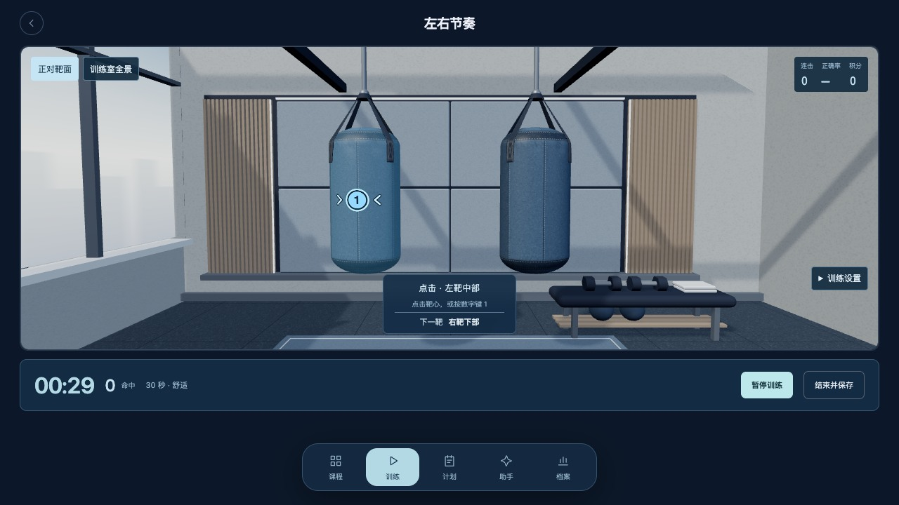

桌面运行记录与自动化测试
三维训练室与训练恢复
浏览三维训练室
恢复成暂停状态


两张图记录同一场 30 秒桌面试练。刷新后停在暂停状态，等待点击「继续训练」。
独立计时测试中，刷新前命中一次。模拟离开 100 秒后，恢复时仍为 7.5 秒。继续训练 2.5 秒后，有效时长为 10 秒。
用原内容重试
测试记录包含 8 秒有效时长和 3 次命中。刷新后待提交记录保留原 UUID 和全部字段，直到待保存状态清除。
两次提交，一条记录
201 → 200独立接口测试将同一条 30 秒、5 次命中的记录提交两次。首次创建成功，重试返回原记录，历史列表只有一行。
训练建议
至少三次可比训练后，规则可以建议调整一级难度，或将时长调整最多 20%，由用户确认。DeepSeek 提供解释。以上桌面测试核对记录一致性；头显追踪与训练效果需要单独评价。